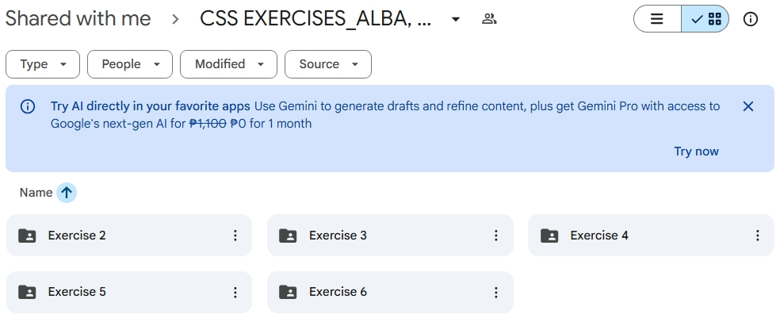
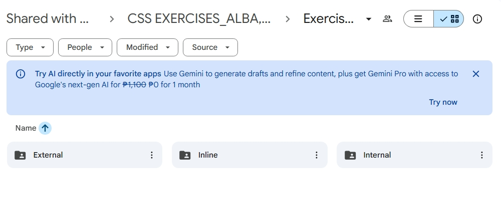

Learning about inline, internal, and external CSS has helped me understand how styling works in web development and when to choose each method. Inline CSS is convenient for making quick, small changes to a single element, but it can make the HTML messy if overused. Internal CSS keeps styles in one place within the section of the HTML file, making it easier to manage than inline styles, though it still mixes structure and design in the same file. External CSS is the most organized and efficient approach, especially for larger projects, because all styles are stored in a separate stylesheet and can be reused across multiple pages. Overall, understanding these three CSS methods has shown me how important it is to choose the right approach depending on the size, complexity, and purpose of a webpage.


Table Page